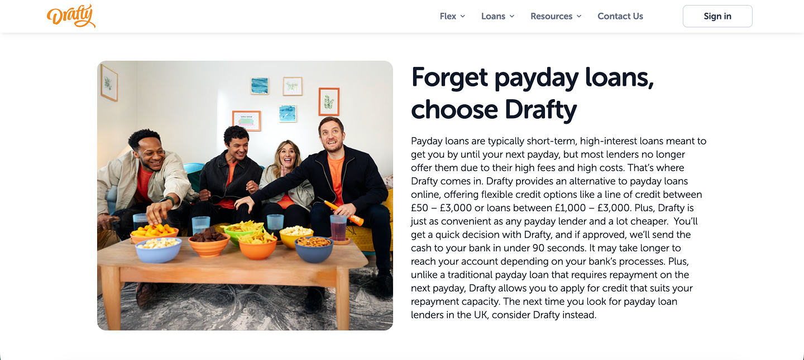

UX audit
I reviewed the web and mobile experiences to identify usability issues and visual inconsistencies.
Gain Credit · Product Designer
At Gain Credit, I worked on Drafty’s website, web application, and mobile experience. I began with a UX audit, introduced visual improvements to the website, and progressively worked on changes across the product.
01 · Product context
Drafty is a UK line-of-credit product. Its public website introduces the service and application journey, while its authenticated web and mobile experiences help existing customers access and manage their accounts.
My work began with an audit of the existing experience. From there, I moved from website visual improvements into progressive changes across the web and mobile applications.
I reviewed the web and mobile experiences to identify usability issues and visual inconsistencies.
I introduced visual improvements to the website before expanding into product work.
I worked across financial workflows, onboarding clarity, and trust as the scope progressed.
02 · UX audit
I conducted a UX audit across Drafty’s website, web application, and mobile application. The review focused on usability, clarity, and consistency across connected customer touchpoints.
The historical audit record and detailed findings are not included in the available source material, so this case study does not reconstruct specific issues, research evidence, or outcomes.
03 · Website improvements
I initially focused on visual improvements to the public Drafty website. This created an early opportunity to improve presentation and consistency before my work expanded into authenticated product surfaces.
The current website has evolved since my employment and is shown only as present-day product context.

04 · Web and mobile
After the website work, I progressively contributed to changes in the web and mobile applications. My focus included simplifying financial workflows and improving the clarity and trust of onboarding.
The available sources confirm the scope of my contribution but do not document individual before-and-after screens, testing results, or conversion figures.
Original authenticated web-product screens have not yet been supplied.
I worked on changes to the browser-based product experience as my remit grew beyond the public website.
I extended the same product-design focus into Drafty’s mobile experience, working within an established financial product rather than presenting the work as a full redesign.
Current app-store screenshots are included only as a product reference link below, not as designs I created.
Original mobile-product screens from my employment period have not yet been supplied.